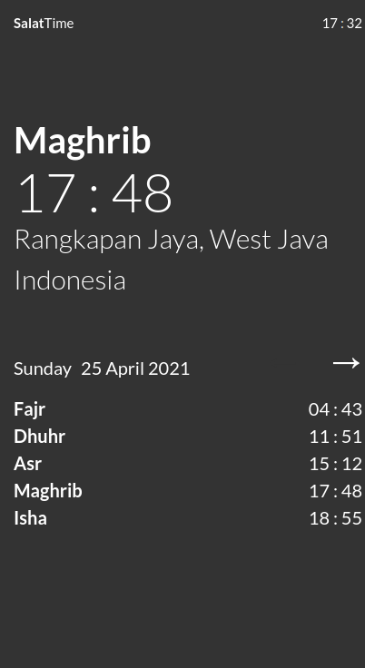

Salat Time
Salat Time is a location based daily salat schedule. It was made to explore browser geolocation API. The geolocation and salat schedule is pretty accurate. Therefore it is useful if one needs to keep track of salat time, especially in places where adzan is not publicly broadcasted. It is also responsive so the schedule display can be optimized for desktop and mobile devices.
Large Screen Size

Small Screen Size
